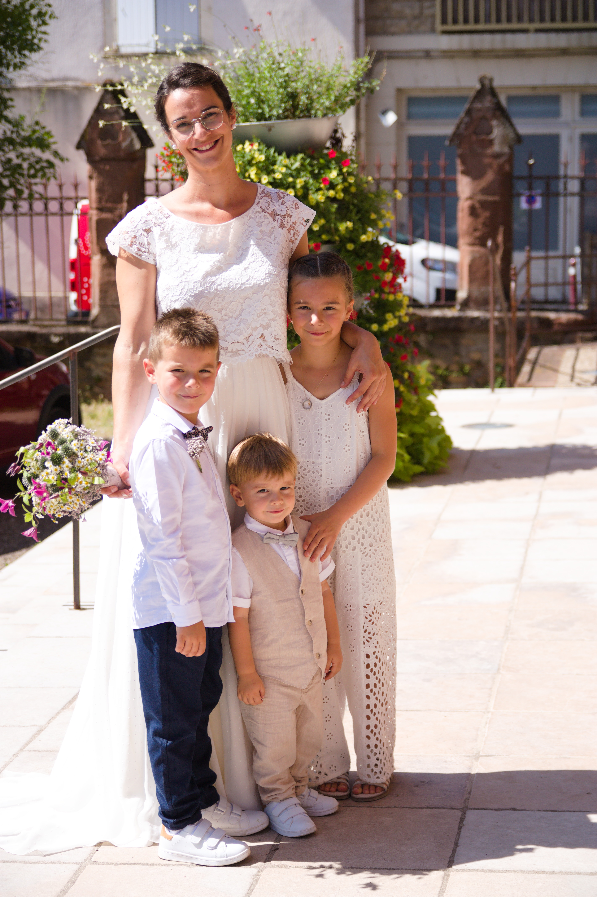
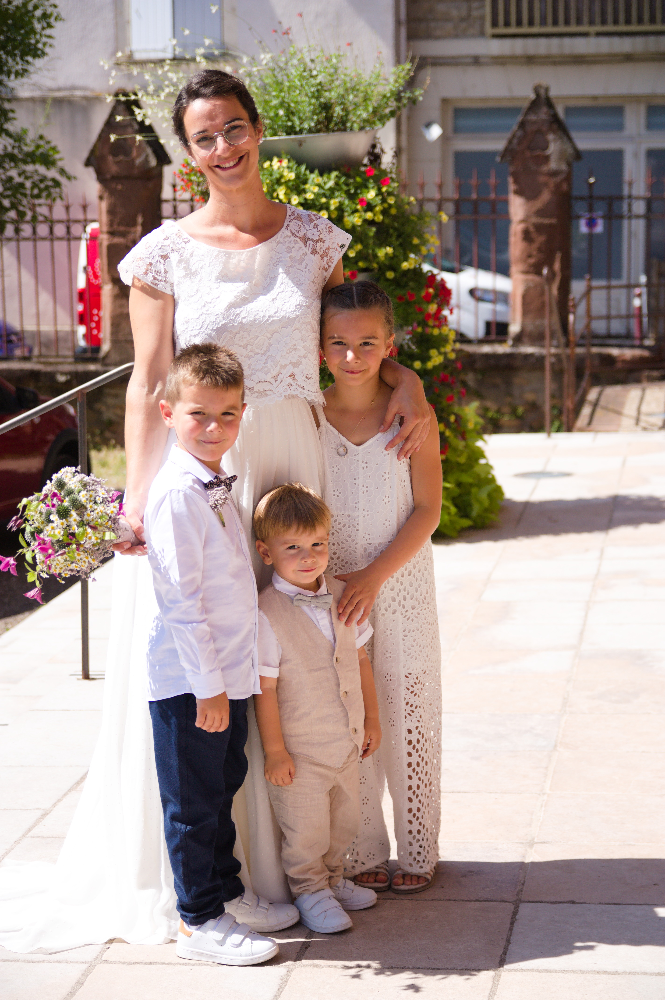

Rstud
Vous allez vous mariez ? envie d'une séance portrait ?
Si vous êtes sur cette page c'est que vous allez bientôt vous mariez alors, toutes mes félicitations
Mais également, c'est que vous recherchez un photographe, super je suis photographe et je vous propose de faire de ce jour,
un jour inoubliable grâce à la photographie.
Choisir un photographe n'est pas chose facile, pour vous aidez dans votre choix, voici deux conseils,
1° Vous devez aimer le travail "le style photographique" du photographe.
2° Vous devez avoir un bon feeling "bon contact relationel" avec lui, car il sera votre partenaire d'une journée.
Je vous invite à regarder mon style à travers ma galerie.
 
